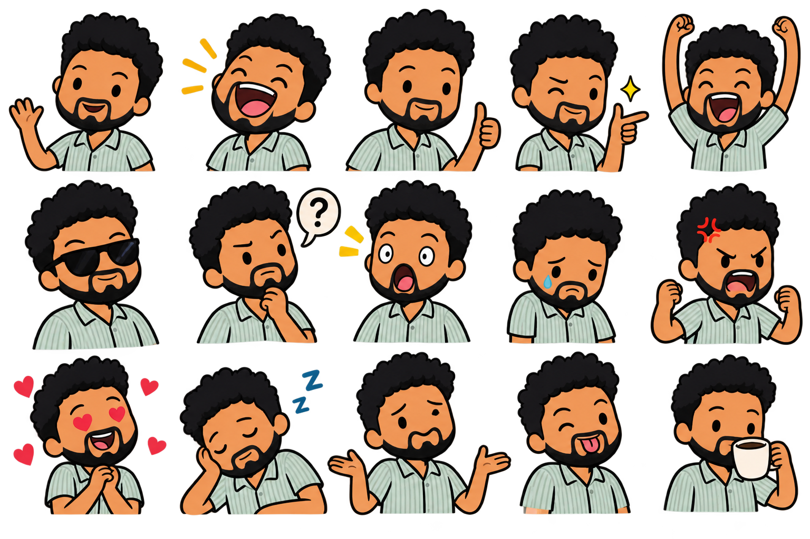

Saludos y presentaciones
Escuche, practique y repita a su propio ritmo. Las palabras en inglés se aprenden por el oído.

¡Bienvenido!
Escriba su nombre para comenzar. Su progreso en este dispositivo se guardará localmente.
Trabalenguas
Idea en español: Seis serpientes tontas venden seis sándwiches.
Escuche la frase en inglés y trate de repetirla tres veces.
La versión inglesa se escucha, no se muestra escrita.
20 palabras y expresiones básicas
Lea el significado en español y toque el audio para escuchar la pronunciación.
5 expresiones idiomáticas
Escuche la expresión en inglés y lea su sentido natural en español.
5 phrasal verbs
Conversación de seis intervenciones
Usted representa al participante B. Escuche al participante A y después grabe o diga su respuesta en voz alta. Cada participante tiene tres intervenciones.
Las grabaciones de voz propias del profesor se podrán añadir posteriormente.
Cuestionario de escucha
Escuche la instrucción en español. Toque A, B o C para escuchar cada alternativa en inglés. Después pulse «Elegir» debajo de la alternativa correcta.
Mi progreso
Todavía no hay intentos registrados.
Esta versión inicial guarda los resultados solamente en el navegador del estudiante. Un panel privado del profesor que reúna todas las notas necesitará una base de datos y autenticación.